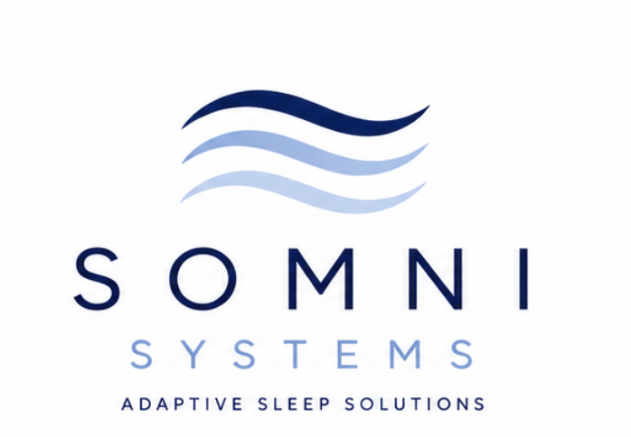
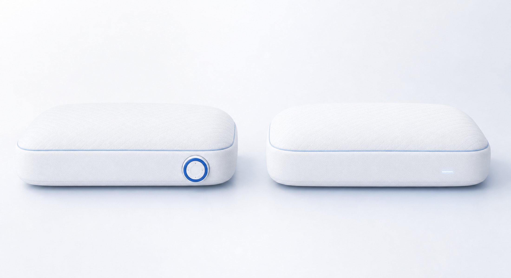
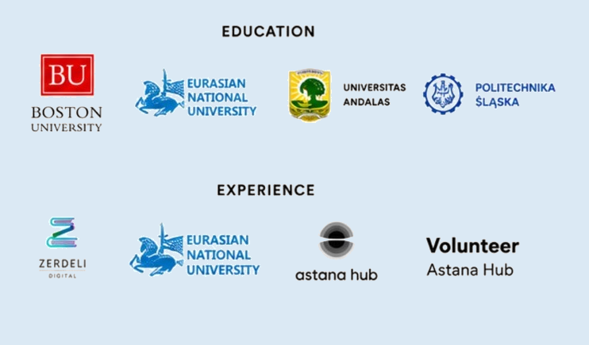

Movement through the night
People rotate and change sleeping positions without necessarily waking.


Built in Boston • Innovate@BU
We are building a pillow platform designed to personalize height and support as your needs change.
The mismatch
Sleep is dynamic. Traditional pillows are designed to hold the same shape and height while you move between positions.
People rotate and change sleeping positions without necessarily waking.
The five physical therapists we interviewed estimated that pillow height is a major contributor for nearly 8 in 10 patients they see with neck pain.
Among the 50+ people we interviewed, discomfort came up repeatedly.
Among the 50+ people Somni interviewed, roughly 40% reported experiencing neck pain.
Does this sound familiar?
Somni customer discovery: 50+ customer conversations and interviews with five physical therapists. Reported experiences are directional insights, not clinical findings.
How it all started
During surgical recovery in June 2025, Ana struggled to find a pillow that supported both her neck and the way she actually slept.
The available options stayed fixed or required removing and rearranging fill. Neither felt natural for everyday use.
At Boston University, Ana and Dannar turned that question into Somni. The team joined the Innovate@BU accelerator and began listening, prototyping, and learning.
What we are exploring
Two approaches to personalized pillow height and support.

Manual adjustment for people who want direct control without opening the pillow or rearranging fill.
A future responsive concept designed to adapt support as sleep position and comfort needs change.
Follow the journey
We are sharing the path from lived experience to a product people can one day welcome into their bedrooms.
A difficult recovery reveals how little most pillows can change with the person using them.
Conversations show how common stacking, folding, and searching really are.
Sketches and early prototypes are turning the idea into something that can be seen, touched, and questioned.
Future feedback and testing will show us how Somni should adapt as sleepers move.
Where we are: AXIS is an early concept in development and is not available for sale. Somni is a comfort exploration, not a medical device or treatment.
Built in Boston
Somni brings together product strategy, systems research, integrated prototyping, and a shared habit of asking better questions.
Product and Strategy Lead
Systems Engineering PhD researcher at BU with experience spanning product architecture and venture strategy.Systems and Engineering Lead
Systems Engineering PhD researcher at BU with experience across integrated prototyping, software, and international engineering programs.
Quick answers
Short answers as we keep building.
AXIS is designed to personalize pillow height and support.
AXIS Core is the manual concept we are focused on now. AXIS Smart is the future responsive plan.
Not yet. Join Somni for progress updates and future opportunities to participate.
No. AXIS is a sleep comfort product in development, not a medical device or treatment.
Come along with us
Follow the journey, see ideas become prototypes, and hear when there are opportunities to shape what comes next.
No spam. Just thoughtful updates from the Somni journey.